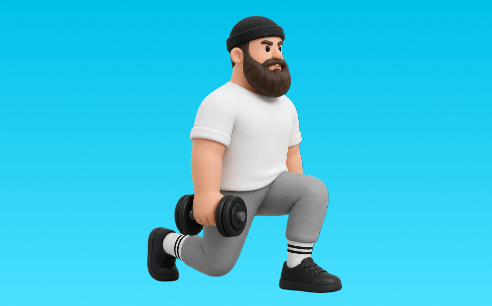

ダンベルランジ

ダンベルランジとは、ダンベルを使って「踏み出してしゃがむ」動作でお尻（臀筋）、脚（大腿四頭筋）を鍛える種目です。可動域が広く、左右のバランスを整えやすいのが特徴で、踏み出して沈み込み、前脚で押して戻す動作を繰り返します。下半身の筋力・筋量アップが期待できます。
- 対象部位
- 脚
- 器具
- ダンベル
- 記録形式
- 重量・回数
- 別名
- DBランジ
YouTube動画
-
ダンベルランジの効果＆やり方！腰を痛めず、脚に効かせるコツ〜重さ・回数まで解説！
-
【フォワードランジ】は踏み込み方を変えるだけで一気にすごいトレーニングになります
-
【ダンベル買ったらコレやるべし】ダンベル定番トレーニングBEST10
-
【ダンベル使用】脚を追い込む6種目のHIIT
-
ダンベルを使った筋トレ｜脚【公式】
-
ダンベルを使った初心者向けトレーニング【公式】
-
ランジの効果的なやり方｜目的別に3つのポイントを解説
-
【初心者】強靭な脚を作るトレーニング ランジを解説【ビーレジェンド チャンネル】
-
【有益】ダンベルランジを3ヶ月間続けた結果…【2chスレ風まとめ】
-
【もう脚トレで迷わない】世界一丁寧なダンベル脚トレ。初心者でも絶対効く4つの種目。
-
バックランジ、スクワット、ブルガリアン、１つではダメ！２つやるべき理由！
-
【毎日ダンベルで筋トレ①】月曜日:脚トレーニング編
-
【筋トレ】ダンベルだけで下半身全体を鍛える6種目の脚のトレーニング【解説付】
-
ランジのやり方、トレーニングフォーム｜効く‼筋トレポイントを解説
YouTubeショート
-
ダンベルランジ（Dumbbell Lunge）の基本フォームとやり方
-
ダンベルランジ
-
【バックランジ】怪我なくお尻を鍛える正しいフォーム解説
-
ミニマリスト脚トレ3種目を紹介 #フィットネス #筋トレ
-
ダンベルリバースランジ(バックランジ)【筋トレライブラリー】
-
正しいブルガリアンスクワット4つのポイント #筋トレ
-
【忙しい人向け】30分で終わる脚トレ#shorts #youtubeshorts #筋トレ大学 #筋トレ #脚トレ
-
スクワットの正しいやり方【筋トレ】
-
【筋トレ】ランジ筋トレの効果とやり方！どこに効く？ #shorts #筋トレ #ランジ #スクワット #自重 #太もも #尻 #大臀筋 #大腿四頭筋 #ハムストリングス
-
ランニングより健康的に痩せる！ #エクササイズ #ダイエット #フィットネス #フィットネス女子
-
下半身トレにオススメのトレーニング「バックランジ」のやり方とコツ！#shorts
-
正しいルーマニアンデッドリフト4つのポイント #筋トレ
-
意外と間違えがちなバックランジ！ 尻・脚トレ！ #筋トレ
-
ボディビル ダンベル・ランジ
-
15秒でわかるリバースランジ #筋トレ #筋トレ記録#ランジ#アプリ#ダンベル#脚#足#大腿四頭筋#ハムストリング
-
【ダンベルを使ったサイドランジの正しいやり方】デカい筋肉、尻＆腿は多角的に鍛えよ！｜Training Movie 100｜Tarzan Web
-
【ブルガリアンスクワット】3つのポイント #パーソナルトレーナー #筋トレ #脚トレ #下半身トレーニング #ブルガリアンスクワット
-
【腰痛予防】ダンベルランジで体幹の支える力を高めよう！ #スクワット #筋トレ
-
ボディビル・トレーニング ダンベル・ランジ
-
ブルガリアンスクワット！お尻に効かせる方法と前ももに効かせる方法🫶🏽
-
バックランジ（ダンベル使用）
-
【ダンベル】歩くだけで全身鍛える
-
家トレ、ダンベルだけでもいい体になれる？#筋トレ #ホームトレーニー
-
【ダンベル】背中トレ4選 #筋トレ
動作方法
- 足幅を決め、体幹を固める
- 股関節と膝を同時に曲げて下ろす
- 足裏全体で床を押して立ち上がる
動作ポイント
- 膝とつま先の向きをそろえる
- 胸を落としすぎない
- かかとを浮かせない
ワンポイントアドバイス
- ウォームアップで股関節と足首を動かす
- 高重量の日はセーフティ設定を確認する
目的別回数設定
目的や体力に応じた一般的な目安です。無理のない範囲で調整してください。
- 筋力アップ
- 1〜5回
- 筋肥大
- 6〜12回
- 持久力アップ
- 13〜20回
YouTube動画について
動画はYouTubeの公開情報をもとに表示しています。内容は投稿者によるもので、Biggrによる監修ではありません。
アプリを入手
筋トレやトレーニングの記録はBiggrにお任せください。今すぐ無料で使い始められます。